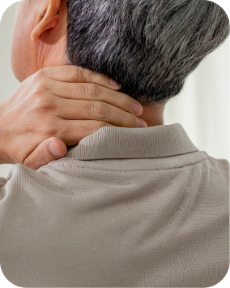
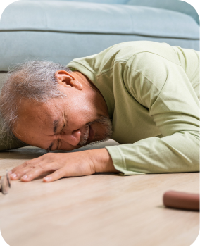

자연스러운 노화
디스크의 수분과 탄력이 감소해 신경이 자극받을 수 있습니다.디스크 탄력 감소에 따른 신경 자극
목디스크는 목뼈 사이의 디스크가 돌출되어 주변 신경을 압박하면서
목과 어깨 통증, 팔과 손의 저림을 유발하는 질환입니다.
목의 뻐근함이 잠시 나아져도 신경 자극이 이어지면 어깨와 팔까지 통증이 퍼질 수 있습니다.
고개를 돌리기 어렵거나 손끝 감각이 둔해지는 증상이 반복된다면 목 상태를 확인해 보는 것이 좋습니다.

디스크의 수분과 탄력이 감소해 신경이 자극받을 수 있습니다.디스크 탄력 감소에 따른 신경 자극
스마트폰과 모니터를 향해 고개를 숙이는 자세가 목에 부담을 줍니다.숙인 자세로 쌓이는 목의 부담
오랜 시간 반복되는 부담이 목 주변 구조에 영향을 줄 수 있습니다.반복되는 부담에 따른 목의 변화

외부 충격이나 무리한 움직임이 증상의 계기가 될 수 있습니다.외부 충격·무리한 움직임의 영향
목디스크는 목에만 통증이 나타나는 것이 아니라 어깨와 팔, 손끝까지 다양한 증상으로 이어질 수 있습니다.
초기에는 약물치료와 물리·운동치료를 통해 통증을 줄이고 목의 움직임과 기능 회복을 돕습니다.
팔 저림이나 통증이 지속되는 경우에는 상태에 따라 주사치료를 고려할 수 있습니다.

진통·소염제 등을 활용해 목과 어깨의 통증과 염증을 완화합니다.
긴장된 근육을 이완하고 목의 움직임과 기능을 회복하도록 돕습니다.


통증 유발점이나 신경 주변에 약물을 적용해 통증 완화를 돕습니다.
목에서 나오는 신경이 자극되면 어깨·팔·손의 통증이나 저림, 근력 저하가 나타날 수 있습니다. 손목이나 팔꿈치의 신경 문제와 구분이 필요합니다.
우선 증상과 근력·감각 등을 진찰합니다. 증상의 정도와 경과, 신경 이상 여부에 따라 필요한 영상검사를 결정합니다.
비수술치료로 증상이 호전되는 경우가 있습니다. 다만 근력이 떨어지거나 증상이 진행하면 치료 계획을 다시 평가해야 합니다.